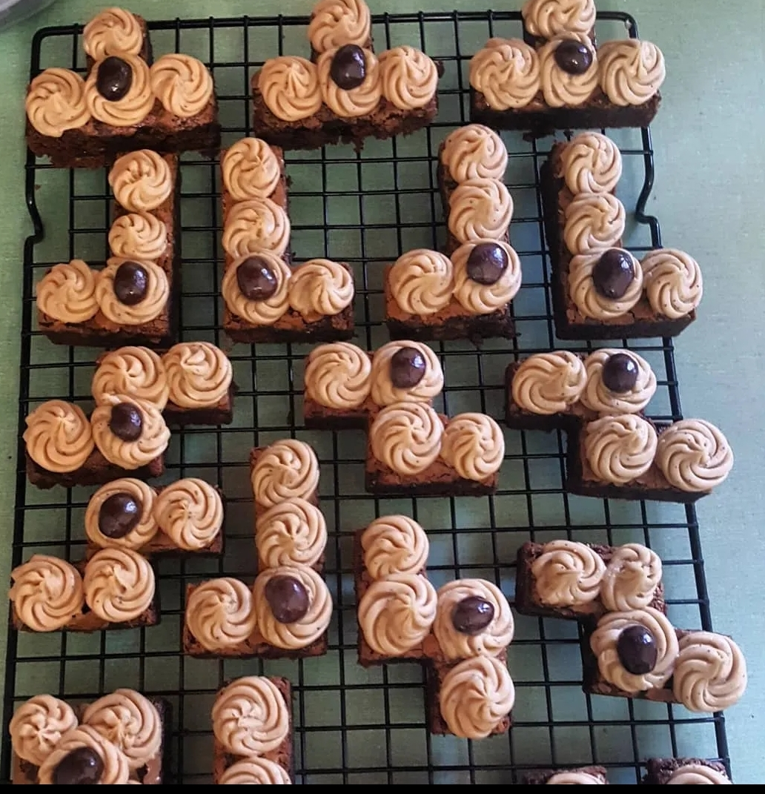

Fun Tetris Kahlua Espresso Brownies
If you don't like brownies polietly exit yourself from this page here.
Brownies are awesome. They are delicious on their own and can also be dressed up and made into a super dessert. Here we have kahlua esspresso brownies. These brownies are more for adults with the kahlua and espresso. They are decedant, fudgy, and rich with chocolate. The fun part with these is I cut them into bite size pieces using tetris cookie cutters, buy some here. If you don't have those on hand you can use different cookie cutters or just stick to the classic brick shape!

Ingredients for batter
- 1 C Butter
- 2 C Sugar
- 4 Eggs
- 2 tsp Vanilla extract
- 2 tsp espresso powder
- 2/3 C cocoa powder
- 1 C all-purpose flour
- 1/2 tsp salt
- 1/2 tsp baking powder
- 1 C chocolate chips
Ingredients for frosting
- 1/2 C unsalted butter (room temp)
- 1 Tbls heavy cream
- 4 Tbls Kahlua coffee liqueur
- 1 tsp espresso powder
- 3 C powdered sugar (sifted)
- Espreso beans for decorating
Directions for Batter
- Preheat oven to 350° and line a 9×13 inch pan with parchment paper, then spray with oil or just spray pan with oil.
- Melt butter in medium saucepan, remove from heat.
- Add sugar, eggs, vanilla, cocoa powder, flour, salt and baking powder, stirring after each addition. Do not overmix.
- Mix in espresso powder until just combined. Gently stir in chocolate chips.
- Pour into prepared pan and bake for 25-30 minutes. DO NOT OVERBAKE. Brownies will settle and firm up as they cool. Cool completely in pan on cooling rack.
- Once fully cooled, using the cookie cutters, cut out brownie pieces, get as close to the edge and previous cuts as possible
Directions for Kahlua Buttercream frosting
- Add butter to a medium bowl and beat with an electric mixer until smooth.
- Add cream and mix to combine.
- In a small bowl, combine Kahlua and espresso powder, stirring briskly with a spoon to dissolve the espresso powder.
- Add Kahlua mixture to butter and mix again.
- With mixer on low speed, add powdered sugar, one cup at a time, mixing until smooth after each addition.
- Beat on medium high, scraping sides once or twice until light and fluffy.
- Spoon buttercream into a pastry bag fitted with a large tip
- Frost each tetris brownie and top with a couple espresso beans
Back to top
Go to Homepage